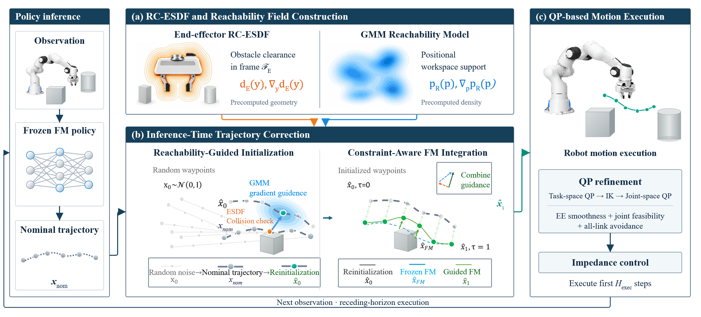
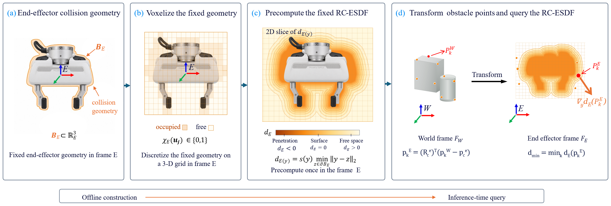
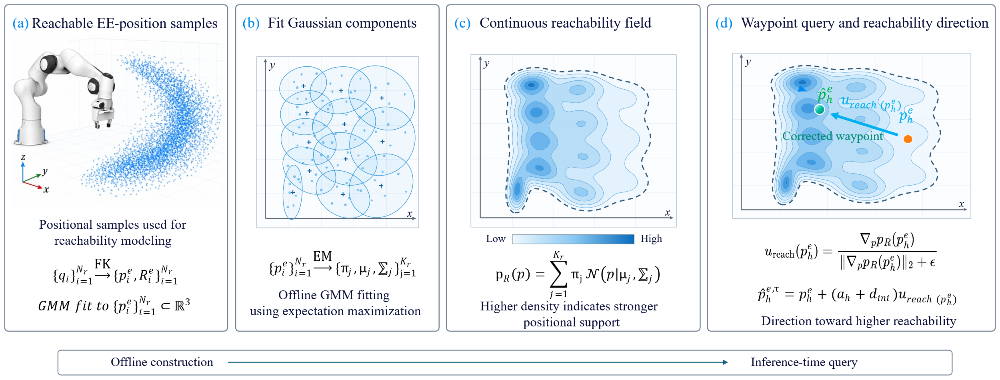
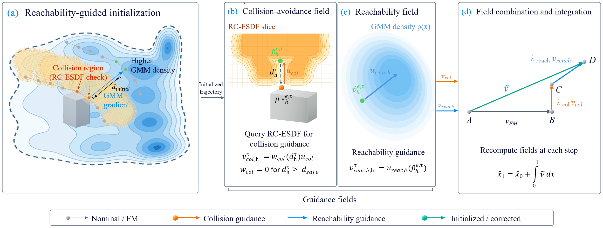

研究与项目
Flow Matching · Robot ManipulationIEEE RA-L 在投
R²Flow：面向机器人操作的约束感知流匹配策略
硕士研究课题 · 2025.10 — 至今
- 问题
- 希望已训练的操作策略能适应新障碍物，而不必重新采集数据和训练模型。
- 方法
- 冻结预训练 Flow Matching 策略，将 ESDF 障碍距离场与 GMM 可达性场的引导注入 ODE 速度场。在推理时修正动作轨迹，保留原轨迹的姿态和夹爪指令。
- 结果
- 在 MuJoCo / RLBench 四项任务中，平均成功率为 54.0%，最优对比基线为 20.8%；160 次未见障碍物仿真评测中未发生碰撞。另在 Franka Research 3 和法奥 FR3 上完成真机验证。
技术细节与更多演示
R²Flow 整体方法冻结策略生成名义轨迹，结合 RC-ESDF 与 GMM 场进行推理期修正，再经 QP、IK 和阻抗控制执行。

RC-ESDF 在末端局部坐标系预计算。在线将障碍点云变换到该坐标系，查询距离和梯度，并根据障碍间距调整引导强度，避免重复重建全局距离场。
障碍点云与局部距离场引导
通过关节限位采样和正运动学生成末端位置数据，拟合 GMM 可达性密度场。先以密度梯度引导随机路径点初始化，再在 Flow Matching 积分过程中联合距离场引导，保留原始姿态与夹爪指令。
GMM 可达性建模与梯度引导
距离场与可达性场的组合
四项任务的成功率与碰撞率TSR 为任务成功率，CR 为碰撞率，单位均为百分比。R²Flow 平均 TSR 为 54.0%，平均 CR 为 0.0%。
 约束引导模块消融
约束引导模块消融 不同方法的推理耗时对比
不同方法的推理耗时对比 引导模块与 QP 的耗时记录
引导模块与 QP 的耗时记录 操作任务的连续帧对比
操作任务的连续帧对比 可达性场与操作轨迹对照
可达性场与操作轨迹对照
任务平均成功率 · MuJoCo / RLBench
VLA · Value Model · Post-training复现项目
π0.6* RECAP：价值引导的 VLA 真机后训练
- 任务
- 复现价值条件化的 VLA 后训练流程，结合示教、自主执行和人工接管轨迹进行训练。
- 方法
- 以 Monte Carlo 回报训练 SmolVLM 帧级价值模型，将高、低价值信号写入文本条件，完成 VLA 策略 Post-SFT。
- 结果
- 在相同任务中，恒发 positive 与恒发 negative 条件各测试 100 次，分别成功 99 次和 76 次。
99 / 100positive 条件测试
76 / 100negative 条件测试
技术细节与更多演示
初始离线 Rollout 共 110 条，人工标注为成功 62 条、失败 48 条。后续加入更多自主执行与人工介入数据，扩充后的数据如下。
| 数据来源 | 轨迹数 | 标签 |
|---|
| 遥操示教 | 251 | Positive |
|---|
| 自主 Rollout 成功 | 62 | Positive |
|---|
| 自主 Rollout 失败 | 97 | Negative |
|---|
| 人工介入后成功 | 80 | Positive |
|---|
统一多模态观测和轨迹格式，用 Monte Carlo 回报为每帧构造价值监督，训练 SmolVLM 预测状态价值分布。人工介入轨迹保留介入区间标签。
成功与失败轨迹的价值预测图中分别抽取 4 条成功、4 条失败轨迹，对照预测价值与 Monte Carlo 回报。

按帧级预测价值排序，将 Top 30% 高价值帧标记为 Positive，其余帧标记为 Negative，生成 Advantage Label。
Advantage 标签统计与分布 优势条件化 SFT 的训练损失
优势条件化 SFT 的训练损失Post-SFT 使用 demo 251 + rollout 110，在第 1000 步解冻 VLM。

RL Token · Actor-Critic · Real Robot复现项目
RLT：轻量 Actor 真机后训练
- 任务
- 复现“多模态表征—2048 维 RL Token—轻量 Actor”两阶段训练架构。
- 方法
- 先通过动作重建学习先验，再以 Q-chunking Critic 和行为克隆约束优化关键阶段的动作块。
- 实现
- 接入四相机观测，完成跨机推理控制、示教回放与人工接管，以及 TD3+BC 预热、在线参数更新、权重同步和训练状态恢复。
技术细节与更多演示
- 先对 π0.5 进行后训练，作为基线；随后冻结 VLA 参数，训练 RLT 编解码模块，将多模态表征压缩为 RL Token。
- 采集数据时保留明显的放置阶段并标记关键帧，使 RL 主要学习放置过程。固定 Z 高度，将探索限制在 X、Y 和 yaw 方向。
| 问题 | 对应处理 |
|---|
| Chunk 切换抖动 | B 样条插值平滑 |
|---|
| 异步推理时动作回撤 | 抛弃过时观测，进行时间对齐 |
|---|
| Actor 输出噪声 | 限制 RL 修正与探索自由度 |
|---|
| 学习效率与采训等待 | 完整动作改为残差；参考 HIL-SERL 解耦异步采集与训练 |
|---|
Visual Subgoals · Simulation · Embodiment Transfer复现项目
LaWAM 复现与本体适配
- 任务
- 复现“预测未来视觉子目标—生成操作动作”的策略，并在新机械臂本体上验证闭环执行。
- 方法
- 基于非夕拂晓 4S，在 Isaac Lab 完成 SFT 后训练与仿真部署。对比预测时长、输入相机及未来状态预测视角，并分析长时序与精细操作任务的失败轨迹。
- 结果
- LIBERO 四套任务成功 1,962 / 2,000 次（98.1%）；RoboTwin 50 项任务成功 594 / 700 次（84.9%）。
98.1%LIBERO · 1,962 / 2,000
84.9%RoboTwin · 594 / 700
技术细节与更多演示
使用官方代码与预训练权重进行真机抓取后训练，初期表现不佳。检查数据格式、训练参数和推理部署后，继续对预测机位和预测视角数量做对照。
进一步在 Isaac Sim 中改变相机视角，分别采集数据、训练并验证。两组记录的抓取 / 放置成功率分别为 90% / 0% 与 100% / 80%。这提示模型可能借助画面中的机械臂本体判断状态。
| 视角设置 | 抓取成功率 | 放置成功率 |
|---|
| 机械臂本体信息较少 | 90% | 0% |
|---|
| 可见机械臂本体 | 100% | 80% |
|---|
VLM · Motion Planning · Dexterous Hand
VLM 驱动的长时序自主操作
澳门大学 × 灵心巧手 · 校企合作项目 · 2025.12 — 2026.03
- 任务
- 将自然语言指令拆成操作步骤和空间目标，在多步骤任务中处理抓取失败与环境变化。
- 方法
- 基于 JAKA Zu3、RealSense D435 与 Linker Hand O6，完成手眼标定、坐标变换、MoveIt 规划执行和抓取模式切换。
- 实现
- 将 VLM 的高层决策转换为机械臂位姿和抓取动作。每步操作后用视觉核对物体状态，必要时重试或重新规划。
技术细节与更多演示
先将指令拆解为操作步骤与空间目标；通过手眼标定和坐标变换，将目标转到机械臂坐标系，再用 MoveIt 规划执行并切换抓取模式。
每步结束后用视觉核对物体状态。抓取失败或环境变化时重试或重规划，再继续后续步骤。平台为 JAKA Zu3、RealSense D435 和 Linker Hand O6。
实习经历
光潆智能
机器人控制算法实习生
- 调试松灵 Piper 及自研机械臂的 ROS 2 / MoveIt 2 规划与轨迹执行，完成规划结果到真机动作的控制链路。
- 整合三维重建、Mesh 路径生成与运动规划，统一坐标及控制接口，处理模型尺度、末端朝向、碰撞和目标不可达问题。
- 基于 OMPL / RRTConnect 开发规划脚本，进行 dry-run、低速执行、软件急停与末端碰撞盒检查，并整理调试步骤。
教育背景
澳门大学
机器人及自主系统 · 硕士在读
太原理工大学
机械电子工程 · 学士 · 211
本科期间参军入伍，服役两年（2021.09 — 2023.09）。
技术能力
- 策略与训练
- Python / PyTorch / RLinf / Flow Matching / Actor-Critic / 价值模型、优势条件化后训练、动作块评估
- 规划与真机
- ROS 2 / MoveIt 2 / OMPL / IK / TF2 / RC-ESDF / 手眼标定、轨迹执行与安全联调
- 实验与工具
- MuJoCo / Isaac Sim / RLBench / robomimic / OpenCV / Linux / Shell / Git / Docker / 批量评测与跨机部署
- 调试平台
- 非夕 Rizon4s、松灵 Piper、Franka Research 3、法奥 FR3、JAKA Zu3、OpenArm、墨影双臂
Linker Hand O6 / Amazing Hand / Aero Hand / Unitree GO1
其他经历与荣誉
中国人民解放军
侦察员，获评“四有优秀”士兵，并获旅级嘉奖一次。
- 多次获学业优秀、研究创新奖学金
- “互联网+”省赛铜奖、RoboMaster 校内赛二等奖
- 英语 CET-6